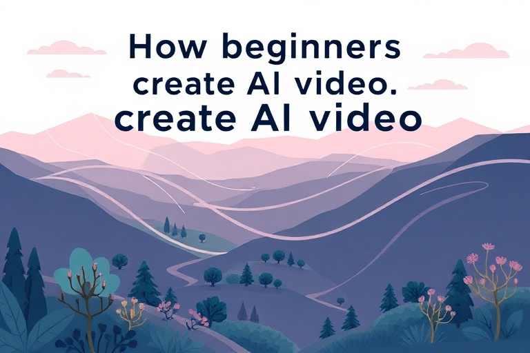

এআই (AI) দিয়ে ভিডিও তৈরি: নতুনদের জন্য সহজ ও কার্যকরী গাইড
Category: video | Language: bn
বর্তমানে ভিডিও কন্টেন্ট তৈরির জন্য দামী ক্যামেরা, স্টুডিও বা উচ্চমানের এডিটিং স্কিলের প্রয়োজন সবসময় পড়ে না। কৃত্রিম বুদ্ধিমত্তা বা এআই (AI) প্রযুক্তি ব্যবহার করে এখন ঘর বসেই চমৎকার ভিডিও তৈরি করা সম্ভব। এই নিবন্ধটি মূলত সেইসব নতুনদের জন্য লেখা হয়েছে, যারা ভিডিও এডিটিংয়ের গভীর জ্ঞান ছাড়াই প্রফেশনাল মানের ভিডিও বানাতে চান। আপনি যদি একজন ইউটিউবার হতে চান, সোশ্যাল মিডিয়া ইনফ্লুয়েন্সার হিসেবে ক্যারিয়ার গড়তে চান কিংবা নিজের ছোট ব্যবসার জন্য বিজ্ঞাপন বানাতে চান, তবে এআই ভিডিও মেকিং আপনার জন্য একটি বৈপ্লবিক সমাধান হতে পারে। এর মাধ্যমে কয়েক ঘণ্টার কাজ এখন মাত্র কয়েক মিনিটে নামিয়ে আনা সম্ভব।
এআই ভিডিও তৈরির প্রক্রিয়াটি বোঝার জন্য আপনাকে কয়েকটি প্রাথমিক ধারণা বা কনসেপ্ট পরিষ্কার করে নিতে হবে। প্রথমটি হলো 'প্রম্পট' (Prompt), যা আসলে এআই-কে দেওয়া আপনার লিখিত নির্দেশ। দ্বিতীয়টি হলো 'টেক্সট-টু-ভিডিও' (Text-to-Video), যেখানে আপনার লেখা বর্ণনা থেকে এআই স্বয়ংক্রিয়ভাবে একটি ভিডিও ক্লিপ তৈরি করে দেয়। এছাড়া রয়েছে 'ইমেজ-টু-ভিডিও' (Image-to-Video), যেখানে একটি স্থির ছবিকে এআই সচল করে তোলে। আরেকটি জনপ্রিয় বিভাগ হলো 'এআই অবতার' (AI Avatar), যেখানে একটি ডিজিটাল চরিত্র আপনার দেওয়া স্ক্রিপ্ট অনুযায়ী কথা বলে। এই প্রযুক্তিগুলো ব্যবহার করে আপনি নিজের চেহারা বা কণ্ঠস্বর ব্যবহার না করেও অত্যন্ত আকর্ষণীয় ভিডিও তৈরি করতে পারেন।
ইন্টারনেটে বর্তমানে অসংখ্য এআই টুল পাওয়া যায়, তবে নতুনদের জন্য রানওয়ে (Runway Gen-2), পিকা ল্যাবস (Pika Labs) বা হে-জেন (HeyGen) এর মতো প্ল্যাটফর্মগুলো বেশ কার্যকর। মনে রাখা জরুরি যে, এই টুলগুলোর বেশিরভাগই 'ফ্রিমিয়াম' (Freemium) মডেলে কাজ করে। অর্থাৎ, আপনি শুরুতে বিনামূল্যে কিছু 'ক্রেডিট' পাবেন যা দিয়ে কয়েক সেকেন্ডের ছোট ভিডিও তৈরি করা যাবে। প্রফেশনাল বা দীর্ঘ ভিডিওর জন্য আপনাকে মাসিক বা বাৎসরিক সাবস্ক্রিপশন ফি দিতে হতে পারে। ভারতের প্রেক্ষাপটে অনেক টুল এখন ইন্টারন্যাশনাল ডেবিট কার্ডের পাশাপাশি ইউপিআই (UPI) পেমেন্টও গ্রহণ করতে শুরু করেছে, তবে পেমেন্ট করার আগে সাইটটির নির্ভরযোগ্যতা যাচাই করে নেওয়া একান্ত প্রয়োজন।
একটি সফল এআই ভিডিও তৈরির জন্য আপনাকে ধাপে ধাপে এগোতে হবে। প্রথমে একটি পরিষ্কার এবং বিস্তারিত স্ক্রিপ্ট তৈরি করুন। এরপর আপনার পছন্দের এআই টুলে লগ-ইন করে 'Generate Video' অপশনে যান। সেখানে আপনার প্রম্পটটি যত নিখুঁতভাবে লিখবেন, ভিডিও তত ভালো হবে। উদাহরণস্বরূপ, শুধু 'একটি বিড়াল' না লিখে লিখুন 'একটি ছোট সাদা বিড়াল বাগানে প্রজাপতির পিছনে দৌড়াচ্ছে, সিনেমাটিক লাইটিং'। ভিডিওটি তৈরি হওয়ার পর সেটি ডাউনলোড করুন। মনে রাখবেন, এআই ভিডিওর মান অনেক সময় একদম নিখুঁত হয় না, তাই ক্যাপকাট (CapCut) বা ভিএন (VN) এডিটরের মতো সহজ অ্যাপ ব্যবহার করে এতে ব্যাকগ্রাউন্ড মিউজিক, টেক্সট ওভারলে এবং কালার গ্রেডিং যোগ করে চূড়ান্ত রূপ দিন।
ব্যবহারিক উদাহরণ হিসেবে ধরা যাক, আপনি আপনার পাড়ার একটি মিষ্টির দোকানের জন্য একটি ছোট প্রমোশনাল ভিডিও বানাতে চান। প্রথমে চ্যাটজিপিটি (ChatGPT) ব্যবহার করে দোকানের বিশেষত্ব নিয়ে একটি সুন্দর স্ক্রিপ্ট লিখে নিন। এরপর লিয়োনার্দো (Leonardo.ai) বা মিডজার্নি ব্যবহার করে জিভে জল আনা রসগোল্লা বা সন্দেশের কয়েকটি উচ্চমানের ছবি জেনারেট করুন। এই ছবিগুলোকে রানওয়ে বা পিকা-তে আপলোড করে 'Motion' অপশন ব্যবহার করে ধোঁয়া বেরনোর বা রস পড়ার মতো এফেক্ট দিন। সবশেষে একটি এআই ভয়েসওভার টুল ব্যবহার করে দোকানের নাম ও ঠিকানা যোগ করলেই আপনার পেশাদার মানের বিজ্ঞাপন তৈরি হয়ে যাবে, যার জন্য কোনো দামী ক্যামেরার প্রয়োজন পড়বে না।
নতুনরা ভিডিও তৈরির সময় প্রায়ই কিছু সাধারণ ভুল করে থাকেন যা এড়িয়ে চলা উচিত। সবচেয়ে বড় ভুল হলো অস্পষ্ট বা ছোট প্রম্পট ব্যবহার করা। এআই-কে আপনি যত বেশি ডিটেইলস দেবেন, সে তত ভালো আউটপুট দেবে। এছাড়া ভিডিওর 'অ্যাসপেক্ট রেশিও' (Aspect Ratio) খেয়াল না করা একটি বড় সমস্যা। ইউটিউবের জন্য ১৬:৯ এবং ইনস্টাগ্রাম রিলস বা ইউটিউব শর্টসের জন্য ৯:১৬ রেশিও সেট করতে ভুলবেন না। অনেক সময় এআই ভিডিওর চরিত্রে মানুষের হাত বা আঙুল অদ্ভুত দেখায় (যাকে 'আর্টিফ্যাক্টস' বলা হয়); এমন হলে প্রম্পট বদলে পুনরায় চেষ্টা করুন। এআই যা দিচ্ছে তা সরাসরি ব্যবহার না করে সবসময় নিজের সৃজনশীলতা দিয়ে একটু এডিট করার চেষ্টা করুন।
প্রযুক্তির সুবিধার পাশাপাশি এর নিরাপত্তা ও নৈতিকতা বজায় রাখাও অত্যন্ত জরুরি। কারো অনুমতি ছাড়া তাদের ছবি বা কণ্ঠস্বর ব্যবহার করে 'ডিপফেক' (Deepfake) ভিডিও তৈরি করা নৈতিকভাবে ভুল এবং অনেক ক্ষেত্রে আইনত দণ্ডনীয় অপরাধ। এছাড়া ইন্টারনেটে অনেক ভুয়া ওয়েবসাইট এআই টুলের নামে আপনার ব্যক্তিগত তথ্য বা ক্রেডিট কার্ড ডিটেইলস হাতিয়ে নিতে পারে, তাই শুধুমাত্র পরিচিত ও বিশ্বস্ত প্ল্যাটফর্ম ব্যবহার করুন। কপিরাইট আইনের দিকেও নজর রাখা প্রয়োজন; অনেক ফ্রি টুল দিয়ে তৈরি ভিডিও ব্যবসায়িক কাজে বা ইউটিউবে মনিটাইজেশনের জন্য ব্যবহারের অনুমতি থাকে না। ভিডিওর ডেসক্রিপশনে এআই ব্যবহারের কথা উল্লেখ করা একটি ভালো অভ্যাস।
পরিশেষে বলা যায়, এআই ভিডিও মেকিং একটি দ্রুত পরিবর্তনশীল ক্ষেত্র এবং এটি শেখার সেরা উপায় হলো নিয়মিত পরীক্ষা-নিরীক্ষা করা। আপনার প্রথম তৈরি করা ভিডিওটি হয়তো নিখুঁত হবে না, কিন্তু ক্রমাগত প্রম্পট লেখা এবং এডিটিং চর্চার মাধ্যমে আপনি দ্রুত দক্ষ হয়ে উঠবেন। প্রযুক্তিকে ভয় না পেয়ে একে নিজের কল্পনাকে বাস্তবে রূপ দেওয়ার একটি মাধ্যম হিসেবে গ্রহণ করুন। আপনার পরবর্তী পদক্ষেপ হতে পারে আজই কোনো একটি ফ্রি এআই টুল বেছে নিয়ে ৫ থেকে ১০ সেকেন্ডের একটি ছোট ক্লিপ তৈরি করা। মনে রাখবেন, এআই আপনার সৃজনশীলতাকে প্রতিস্থাপন করবে না, বরং তাকে আরও শক্তিশালী করে তুলবে।